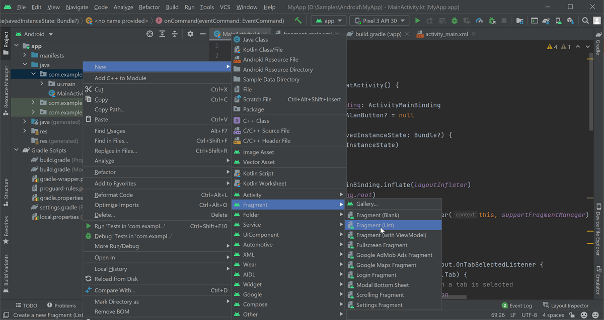

Sending data from the app to the dialog script (Kotlin)¶
In some cases, you need to send data from your app to the voice assistant to use it in your dialog. For that, you can use Alan AI’s project API functionality. Project API allows sending any information from the app to the dialog script and triggering activities without a voice command. To use it, we need to do the following:
Define a new project API method in the dialog script
Call this method from the app
In this tutorial, we will send the information about a list item to the dialog script and add it to the favorites list. The user will then be able to ask what items are added to favorites, and the voice assistant will list them.
What you will learn¶
How to send arbitrary data from the dialog script to the app
How to trigger activities without a voice command
What you will need¶
For this tutorial, we will use the app created in the Building a voice assistant for an Android Java or Kotlin app tutorial.
Step 1. Add a list of items¶
First, we need to add a list of items to one of app’s tabs.
Add a new fragment to the app: right-click the app folder and select New > Fragment > Fragment (List). In the displayed window, click Finish.
Open the
SectionsPagerAdapterfile and update thegetItem()function to add the list to the first tab:SectionsPagerAdapter¶class SectionsPagerAdapter(private val context: Context, fm: FragmentManager) : FragmentPagerAdapter(fm) { override fun getItem(position: Int): Fragment { /// Placing list onto first tab return when(position){ 0-> ItemFragment() else -> PlaceholderFragment.newInstance(position + 1) } } }
Open the
MyItemRecyclerViewAdapterfile and in theViewHolderclass, register theonClickListenerfor the item list:MyItemRecyclerViewAdapter¶class MyItemRecyclerViewAdapter(private val values: List<PlaceholderItem>) : RecyclerView.Adapter<MyItemRecyclerViewAdapter.ViewHolder>() { inner class ViewHolder(binding: FragmentItemBinding) : RecyclerView.ViewHolder(binding.root) { /// Registering click listener init { itemView.setOnClickListener{v: View -> val position: Int = bindingAdapterPosition Toast.makeText(itemView.context, "Item # ${position + 1} is added to favorites", Toast.LENGTH_SHORT).show() } } } }
Run the app. You can now click an item in the list, and the item position will be displayed in the toast message.
Step 2. Define a project API method¶
To make the favorites list, let’s get the item position, send it to the dialog script and add it to the favorites array on the script side when an item is clicked.
In Alan AI Studio, add the following code to the dialog script:
onCreateUser(p => p.userData.favorites = []);
projectAPI.getPosition = function(p, params, callback) {
p.userData.favorites.push(params.pos);
callback();
}
intent('What are my favorites?', p => {
p.play('You have added the following items to favorites');
for (let i = 0; i < p.userData.favorites.length; i++) {
let itemPosition = p.userData.favorites[i]
p.play(`Item ${itemPosition + 1}`);
}
});
Here, when the user starts a dialog with the voice assistant, we are first creating an empty favorites array. For that, we are using Alan AI’s onCreateUser predefined callback.
Next, we are defining the getPosition() project API method that gets the item position and pushes it to the favorites array. And finally, we are adding an intent to check the favorites list contents.
Step 3. Call the project API method in the app¶
After we have defined the method in the dialog script, we need to call it in the app.
In the IDE, open the
MainActivity.ktfile and add thecallProjectApi()function to theMainActivityclass.MainActivity.kt¶class MainActivity : AppCompatActivity() { /// Calling projectAPI.getPosition from the dialog script fun callProjectApi(itemPosition: Int) { /// Providing item position val params = JSONObject() try { params.put("pos", itemPosition) } catch (e: JSONException) { e.message?.let { Log.e("AlanButton", it) } } alanButton?.callProjectApi("script::getPosition", params.toString()) } }
Here, we are using the callProjectApi() method to call the
getPosition()method added to the dialog script.Open the
MyItemRecyclerViewAdapterfile and update theonClickListenerto call thecallProjectApi()function from theMainActivity:MyItemRecyclerViewAdapter¶class MyItemRecyclerViewAdapter(private val values: List<PlaceholderItem>) : RecyclerView.Adapter<MyItemRecyclerViewAdapter.ViewHolder>() { inner class ViewHolder(binding: FragmentItemBinding) : RecyclerView.ViewHolder(binding.root) { /// Registering the click listener init { itemView.setOnClickListener{v: View -> val position: Int = bindingAdapterPosition Toast.makeText(itemView.context, "Item # ${position + 1} is added to favorites", Toast.LENGTH_SHORT).show() /// Calling the callProjectApi() function val activity = contentView.context as Activity (activity as MainActivity).callProjectApi(position) } } } }
You can test it: run the app and tap several items in the list. Then tap the Alan AI button and ask: What are my favorites? The AI assistant will list all items you have tapped.